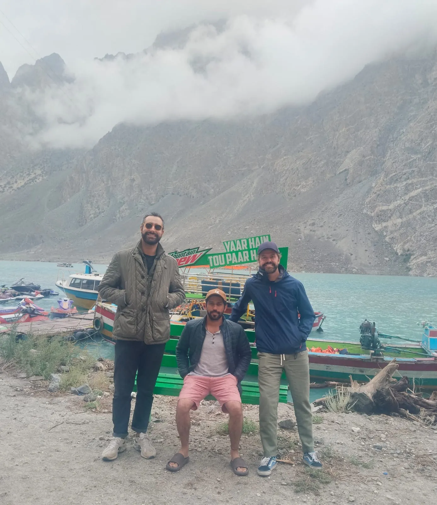
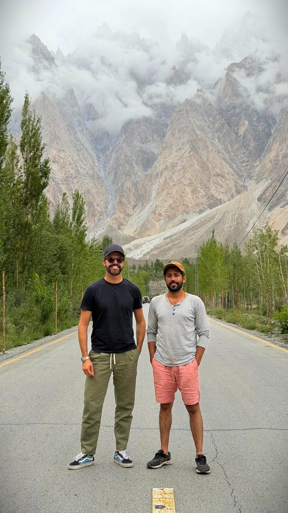
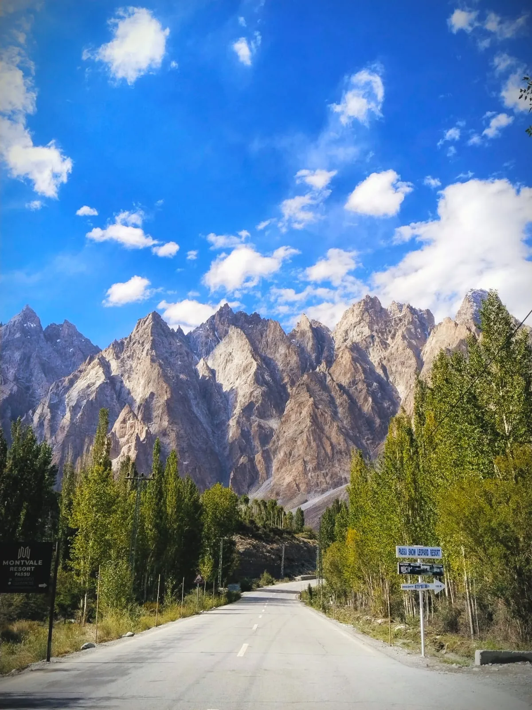
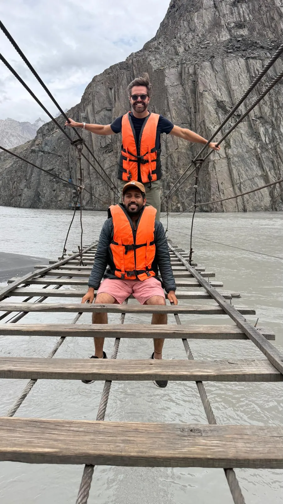
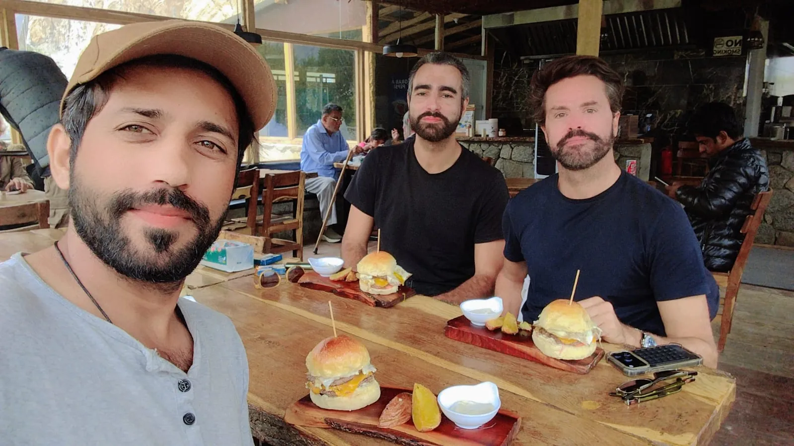

Hunza is the highlight of many trips to northern Pakistan, and it was the high point of this one too. Our guests travelled up the Karakoram Highway with Bilawal to the upper Hunza valley, also called Gojal, for lakes, glaciers and some of the most dramatic mountain scenery anywhere.
Attabad Lake
Attabad Lake looks as if it has always been there, but it was formed in January 2010, when a huge landslide blocked the Hunza River and flooded the valley behind it. Today its turquoise water is one of the most photographed sights in Pakistan. You can take a boat ride, try jet skiing in summer, or simply sit at one of the lakeside cafés. The new Karakoram Highway runs past it through a series of tunnels.
The Passu Cones

Further north, the road runs straight towards the Passu Cones, also known as Tupopdan, a row of sharp granite spires rising to over 6,000 metres. Standing in the middle of the Karakoram Highway with the cones behind you is a classic Hunza photo stop. On a cloudy day the peaks play hide and seek; on a clear day they look almost unreal.

The Hussaini Suspension Bridge

Near the village of Hussaini, a long rope-and-plank bridge crosses the Hunza River. The gaps between the planks and the swaying in the wind make it famous as one of the most thrilling bridges in the world. Life jackets are provided, and our guests made it across with big smiles. If heights are not for you, the view from the riverbank is just as good.
Lunch with a view

Good food is part of every trip with us. Between the sightseeing stops there is always time for a relaxed lunch at a local café, a cup of chai and a chat about the places you have just seen.
Plan your Hunza trip
The best time to visit is from May to October, with blossom in spring and golden colours in autumn. Read our Hunza 3-day itinerary, see the Hunza tour, or combine Lahore, Islamabad, Kaghan and Hunza in our Grand Northern 16-day tour. Book a tour and we will plan it with you.
Explore with Past Enlighten
Ask about route options, dates and what is included. Confirm the price and itinerary in writing before you book.
Continue planning
Travel conditions, access, schedules and prices can change. Confirm current details locally before departure.